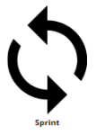

Eventos

A Sprint é um ciclo de trabalho que tem o objetivo de melhorar ou criar um produto em um curto período de tempo, ou seja, em uma versão da Sprint um produto é criado ou melhorado. Durante a iteração da Sprint ocorrerá a execução dos testes de unidade e/ou comportamento utilizando o framework BDD, e a descoberta e escrita de novos cenários de testes.
A Sprint é um ciclo de trabalho que tem o objetivo de melhorar ou criar um produto em um curto período de tempo, ou seja, em uma versão da Sprint um produto é criado ou melhorado. Durante a iteração da Sprint ocorrerá a execução dos testes de unidade e/ou comportamento utilizando o framework BDD, e a descoberta e escrita de novos cenários de testes.

Daily Scrum é uma reunião diária (de no máximo 15 minutos) que ocorre ao longo da execução da Sprint com a equipe de desenvolvimento para avaliar o andamento das atividades e definir o que será feito nas próximas 24 horas para alcançar a meta da Sprint. Espera-se que com a realização dessa reunião o trabalho realizado desde a última Daily Scrum seja analisado, que os problemas encontrados no caminho sejam controlados e que o próximo passo seja planejado. Participam da reunião o gerente e a equipe de desenvolvimento da Fábrica e eles devem relatar o que foi desenvolvido, testado e melhorado nesta Sprint e as partes interessadas discutem sobre isso.

Revisão de Sprint é a atividade de revisão que ocorre no final da Sprint com o objetivo de verificar a melhoria do produto e, se necessário, adaptar o backlog do produto. Durante esse evento a equipe de desenvolvimento apresenta o que foi realizado durante a Sprint e o projeto é analisado com base na meta da Sprint, mas o idealizado é que as atividades do backlog do produto designados para a Sprint tenham sido concluídos.
<< Voltar